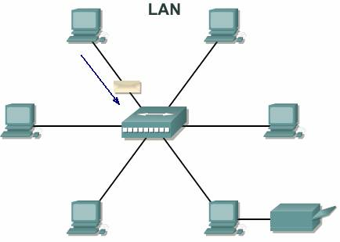
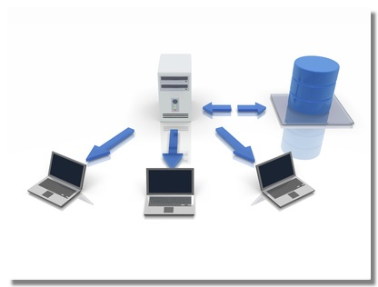
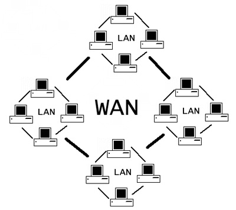
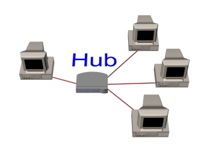
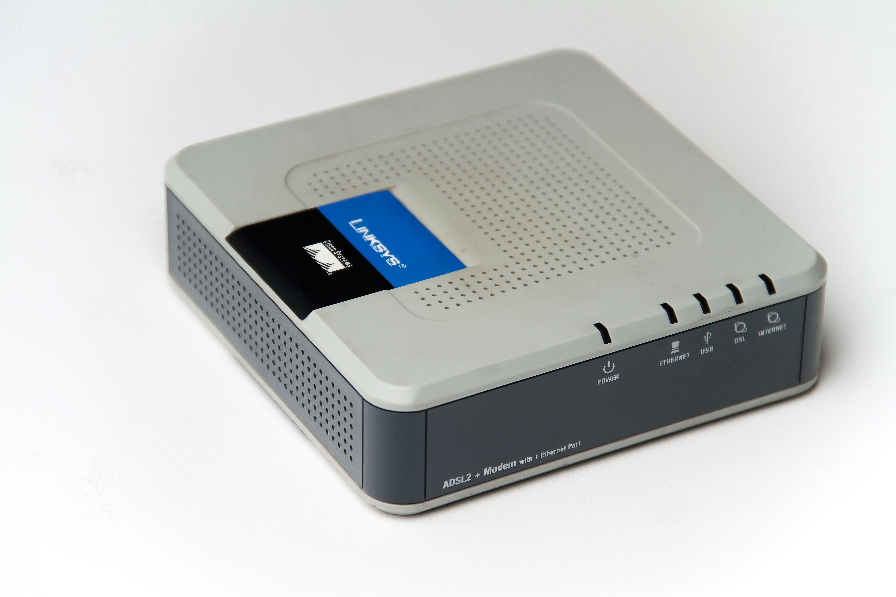

Tipos de redes
| Nombre | Caracteristicas | Ventajas | Desventajas |
|---|---|---|---|
| LAN  |
Las redes LAN se pueden conectar entre ellas a través de líneas telefónicas y ondas de radio. Un sistema de redes LAN conectadas de esta forma se llama una WAN . |
Permite que los usuarios envíen o reciban archivos y compartan el acceso a los archivos ya los datos. Cada ordenador conectado a una LAN se llama un nodo . |
Para que ocurra el Proceso de intercambiar la informacion los PC's deben estar cerca geograficamente. Solo pueden conectar PC's o microcomputadoras. |
| CAN  |
Se basa en el modelo productor/consumidor, el cual es un concepto, o paradigma de comunicaciones de datos, que describe una relación entre un productor y uno o más consumidores. CAN es un protocolo orientado a mensajes, es decir la info que se va a intercambiar se descompone en mensajes. |
Ofrece una solución a la gestion de la comunicación entre múltiples CPUs (unidades centrales de proceso). |
CAN fue desarrollado, inicialmente para aplicaciones en los automóviles y por lo tanto la plataforma del protocolo es resultado de las necesidades existentes en el área de la automoción. |
| WAN  |
Son construidas por y para una organización o empresa particular y son de uso privado, otras son de internet para proveer de conección a sus clientes. |
Las WAN pueden utilizar un software especializado para incluir mini y macro computadoras como elementos de red. No esta limitada a espacio geografico para establecer comunicación entre PC´s o mini o macro computadoras. |
Los equipos deben poseer gran capacidad de memoria, si se quiere que el acceso sea rápido. Poca seguridad en las computadoras (infeccion por virus, eliminación de programas, entre otros). |
Dispositivos de red
| Dispositivo | Función principal | Dónde se usa normalmente | Ejemplo o aplicación |
|---|---|---|---|
Router  |
Conecta distintas redes entre sí, asigna rutas a los datos. |
Hogares, oficinas, instituciones. |
Conectar la red de tu casa a Internet a través del proveedor (ISP). |
Switch  |
Conecta múltiples dispositivos dentro de una red local (LAN) y distribuye datos eficientemente. |
Oficinas, redes medianas o grandes. |
Red interna de una empresa. |
| Hub  |
Conecta dispositivos en una red pequeña, pero sin filtrar el tráfico. |
Redes antiguas o muy básicas. |
Compartir archivos entre pocas PC. |
| Módem  |
Traduce señales digitales a analógicas y viceversa para permitir el acceso a Internet. |
Entre la red local y la línea del proveedor. |
Acceso a Internet por cable o ADSL. |
Access Point (AP)  |
Permite que los dispositivos se conecten a la red de forma inalámbrica (Wi-Fi). |
Lugares grandes como escuelas, oficinas, hoteles. |
Proveer Wi-Fi en una universidad. |